rm(list=ls()) 2023-24-PSYC122-w16-how-to
Introduction
In Week 16, we aim to develop skills in visualizing and testing the associations between variables in psychological data.
We do this to learn how to answer research questions like:
- What person attributes predict success in understanding?
- Can people accurately evaluate whether they correctly understand written health information?
These kinds of research questions can be answered using methods like correlation and linear models.
We will consolidate and extend learning on data visualization:
- Use histograms to examine the distributions of variables;
- Use scatterplots to examine the relationships we may observe or predict.
This how-to guide
This guide is designed to help you work out:
- how to write or edit R code to do things like visualization or analysis;
- how to identify key information for interpretation and reporting.
Naming things
I will format dataset names like this:
study-one-general-participants.csv
I will also format variable (data column) names like this: variable
I will also format value or other data object (e.g. cell value) names like this: studyone
I will format functions and library names like this: e.g. function ggplot() or e.g. library {tidyverse}.
We will take things step-by-step
I will split .Rmd scripts by steps, tasks and questions:
- different steps for different phases of the analysis workflow;
- different tasks for different things you need to do;
- different questions to examine different ideas or coding challenges
The data we will be using
In this how-to guide, we use data from a 2020 study of the response of adults from a UK national sample to written health information:
study-one-general-participants.csv
Notice that this dataset is different from the data you use to complete the Week 16 lab activity tasks or questions.
Step 1: Set-up
To begin, we set up our environment in R.
Task 1 – Run code to empty the R environment
Task 2 – Run code to load relevant libraries
library("tidyverse")── Attaching packages ─────────────────────────────────────── tidyverse 1.3.2 ──
✔ ggplot2 3.4.4 ✔ purrr 1.0.2
✔ tibble 3.2.1 ✔ dplyr 1.1.2
✔ tidyr 1.3.0 ✔ stringr 1.5.0
✔ readr 2.1.3 ✔ forcats 0.5.2
── Conflicts ────────────────────────────────────────── tidyverse_conflicts() ──
✖ dplyr::filter() masks stats::filter()
✖ dplyr::lag() masks stats::lag()Step 2: Load the data
Task Task 3 – Read in the data file we will be using
The data file is called:
study-one-general-participants.csv
Use the read_csv() function to read the data file into R:
study.one <- read_csv("study-one-general-participants.csv") Rows: 169 Columns: 12
── Column specification ────────────────────────────────────────────────────────
Delimiter: ","
chr (5): participant_ID, study, GENDER, EDUCATION, ETHNICITY
dbl (7): mean.acc, mean.self, AGE, SHIPLEY, HLVA, FACTOR3, QRITOTAL
ℹ Use `spec()` to retrieve the full column specification for this data.
ℹ Specify the column types or set `show_col_types = FALSE` to quiet this message.When you read the data file in, give the data object you create a distinct name e.g. study.one.
Task 4 – Inspect the data file
Use the summary() or head() functions to take a look
head(study.one)# A tibble: 6 × 12
participant_ID mean.acc mean.self study AGE SHIPLEY HLVA FACTOR3 QRITOTAL
<chr> <dbl> <dbl> <chr> <dbl> <dbl> <dbl> <dbl> <dbl>
1 studyone.1 0.49 7.96 studyo… 34 33 7 53 11
2 studyone.10 0.85 7.28 studyo… 25 33 7 60 11
3 studyone.100 0.82 7.36 studyo… 43 40 8 46 12
4 studyone.101 0.94 7.88 studyo… 46 33 11 51 15
5 studyone.102 0.58 6.96 studyo… 18 32 3 51 12
6 studyone.103 0.84 7.88 studyo… 19 37 13 45 19
# ℹ 3 more variables: GENDER <chr>, EDUCATION <chr>, ETHNICITY <chr>summary(study.one) participant_ID mean.acc mean.self study
Length:169 Min. :0.3600 Min. :3.440 Length:169
Class :character 1st Qu.:0.7600 1st Qu.:6.080 Class :character
Mode :character Median :0.8400 Median :7.080 Mode :character
Mean :0.8163 Mean :6.906
3rd Qu.:0.9000 3rd Qu.:7.920
Max. :0.9900 Max. :9.000
AGE SHIPLEY HLVA FACTOR3
Min. :18.00 Min. :23.00 Min. : 3.000 Min. :34.00
1st Qu.:24.00 1st Qu.:33.00 1st Qu.: 7.000 1st Qu.:46.00
Median :32.00 Median :35.00 Median : 9.000 Median :51.00
Mean :34.87 Mean :34.96 Mean : 8.905 Mean :50.33
3rd Qu.:42.00 3rd Qu.:38.00 3rd Qu.:10.000 3rd Qu.:55.00
Max. :76.00 Max. :40.00 Max. :14.000 Max. :63.00
QRITOTAL GENDER EDUCATION ETHNICITY
Min. : 6.00 Length:169 Length:169 Length:169
1st Qu.:12.00 Class :character Class :character Class :character
Median :13.00 Mode :character Mode :character Mode :character
Mean :13.36
3rd Qu.:15.00
Max. :19.00 Note that head() will give you the top few rows of any dataset you have read into R.
head(...)is a function, and you put the name of the dataset inside the brackets to view it.summary()will give you either descriptive statistics for variable columns classified as numeric or will tell you that columns in the dataset are not numericsummary()is also a function and, again, you put the name of the dataset inside the brackets to view it
Use the information in the summary view to answer the following questions.
Q.1. What is the mean of
mean.acc?A.1. 0.8163
Q.2. What class is the variable
study?A.2.
characterQ.3. – Does the summary indicate if any variable has missing values (
NA)?Q.3. – No
Task 5 – Change the class or type of the variable study to factor
hint: Task 5 – You can use the as.factor() function you have used before
study.one$study <- as.factor(study.one$study)Question: Task 5
- Q.4. After you have done this, what information does
summary()give you about the variablestudy?
summary(study.one) participant_ID mean.acc mean.self study
Length:169 Min. :0.3600 Min. :3.440 studyone:169
Class :character 1st Qu.:0.7600 1st Qu.:6.080
Mode :character Median :0.8400 Median :7.080
Mean :0.8163 Mean :6.906
3rd Qu.:0.9000 3rd Qu.:7.920
Max. :0.9900 Max. :9.000
AGE SHIPLEY HLVA FACTOR3
Min. :18.00 Min. :23.00 Min. : 3.000 Min. :34.00
1st Qu.:24.00 1st Qu.:33.00 1st Qu.: 7.000 1st Qu.:46.00
Median :32.00 Median :35.00 Median : 9.000 Median :51.00
Mean :34.87 Mean :34.96 Mean : 8.905 Mean :50.33
3rd Qu.:42.00 3rd Qu.:38.00 3rd Qu.:10.000 3rd Qu.:55.00
Max. :76.00 Max. :40.00 Max. :14.000 Max. :63.00
QRITOTAL GENDER EDUCATION ETHNICITY
Min. : 6.00 Length:169 Length:169 Length:169
1st Qu.:12.00 Class :character Class :character Class :character
Median :13.00 Mode :character Mode :character Mode :character
Mean :13.36
3rd Qu.:15.00
Max. :19.00 - A.4. We can see the number 169 beside the word
studyone: this tells us that there are 169 observations, in the column, each one is a value: the word or character stringstudyone.
Step 3: Use histograms to examine the distributions of variables
Revise: consolidate what you know
Task 6 – Draw histograms to examine the distributions of variables
Hint: Task 6
Use ggplot() with geom_histogram().
The first time we do this, we take things step-by-step.
Here’s an example: run the line of code and see the result in the Plots window in R-Studio.
ggplot(data = study.one, aes(x = mean.acc)) + geom_histogram()`stat_bin()` using `bins = 30`. Pick better value with `binwidth`.
These are the steps, set out one at a time:
ggplot(...)you tell R you want to make a plot using theggplot()functionggplot(data = study.one ...)you tell R you want to make a plot with thestudy.onedataggplot(..., aes(x = mean.acc))you tell R that you want to make a plot with the variablemean.acc- here, you specify the aesthetic mapping,
x = mean.acc ggplot(...) + geom_histogram()you tell R you want to plot values ofmean.accas a histogram
Questions: Task 6
- Q.5. Did you get a message in the
Consolewindow inR-Studio: what does it say? - A.5. The message says:
`stat_bin()` using `bins = 30`. Pick better value with `binwidth`.Q.6. What does
binwidthrefer to?hint: Q.6. You need to do a search online (e.g., using Google) with the keywords: “ggplot reference geom_histogram”
A.6. If your search gets you to this page:
https://ggplot2.tidyverse.org/reference/geom_histogram.html
- Then you will first see a technical definition “The width of the bins. Can be specified as a numeric value …”
- You will second see examples of the use of the term e.g.
ggplot(diamonds, aes(carat)) + geom_histogram(binwidth = 0.01)- If you run the example code, it will produce a plot. Do it.
It is a very good idea to get get some experience doing searches online for information about working with data analysis tasks.
- You will find that there is a lot of useful information, written in different ways for people with different levels of expertise
Here, we are interested in working with binwidth in geom_histogram().
- The example gives us a hint at what we can do: we can change the appearance of the bars in the histogram.
- The bars in the histogram represent how often we observe, in a dataset, a grouping of similar values in a variable.
- Larger (wider) bins count more different values as similar.
- So increasing binwidth will give you fewer wider bars in a histogram. Check it out.
Task 7 – Experiment with changing the binwidth
hint: Task 7 – Use geom_histogram(binwidth = ...) like you can see in the ggplot() reference example
Note that binwidth needs to take into account the scale of the x variable:
- It won’t work for
mean.accif you makebinwidth = 100. - The number will need to be something between 0 and 1 (the min and max for
mean.acc). - Try a few different numbers, like this:
ggplot(data = study.one, aes(x = mean.acc)) + geom_histogram()`stat_bin()` using `bins = 30`. Pick better value with `binwidth`.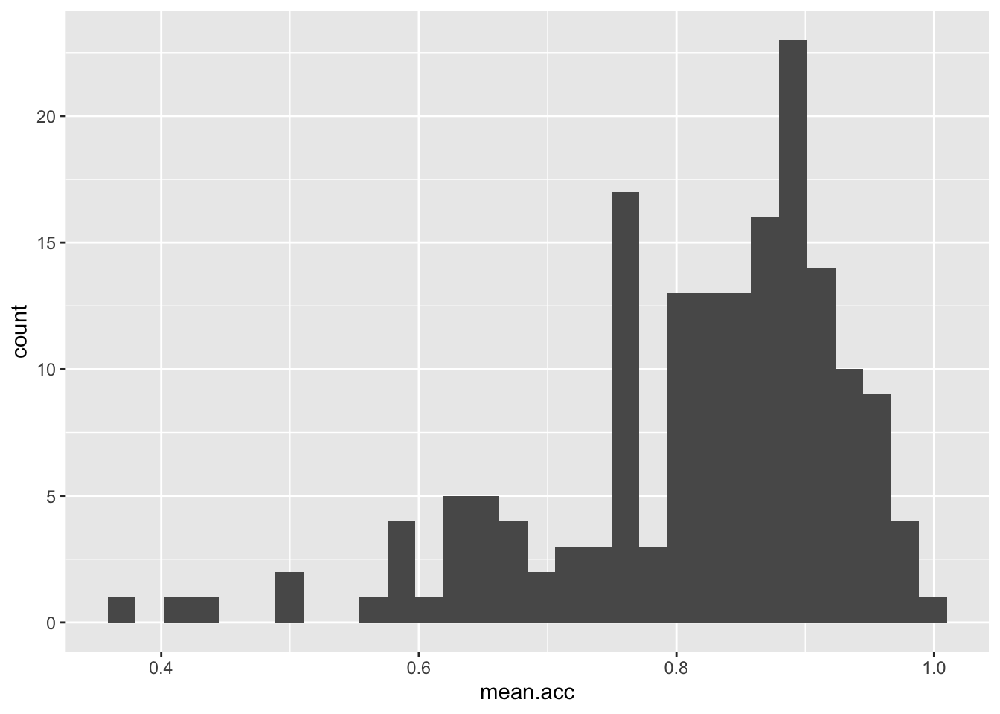
ggplot(data = study.one, aes(x = mean.acc)) + geom_histogram(binwidth = 0.1)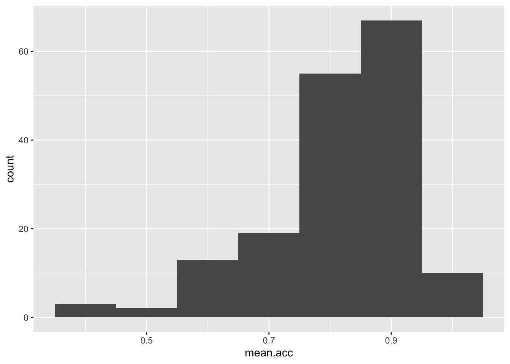
ggplot(data = study.one, aes(x = mean.acc)) + geom_histogram(binwidth = 0.2)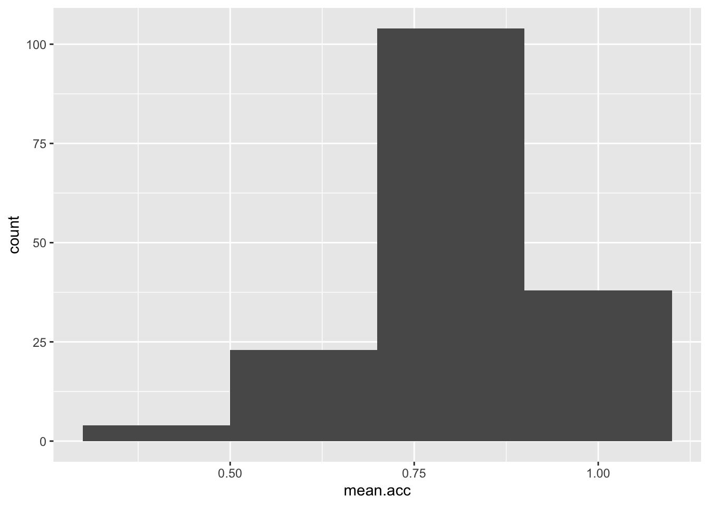
Step 4: Edit your plots to make them look good
Extend: make some new moves
Task 8 – Edit the appearance of the plot step-by-step
hint: Task 8 – ggplot() code does not all have to be on the same line
If we break the plot code into steps, it will make it easier to read, and it will make it easier to add edits e.g.
ggplot(data = study.one, aes(x = mean.acc)) +
geom_histogram()`stat_bin()` using `bins = 30`. Pick better value with `binwidth`.
If you run the selection of both lines, you get the code to work.
Here, we are going to edit:
- The appearance of the bars using binwidth;
- The colour of the background using
theme_bw(); - The appearance of the labels using
labs().
Take a look at how the code changes and how the plot changes with each edit to the code.
- The appearance of the bars using binwidth
ggplot(data = study.one, aes(x = mean.acc)) +
geom_histogram(binwidth = 0.2)
- The colour of the background using
theme_bw()
ggplot(data = study.one, aes(x = mean.acc)) +
geom_histogram(binwidth = 0.2) +
theme_bw()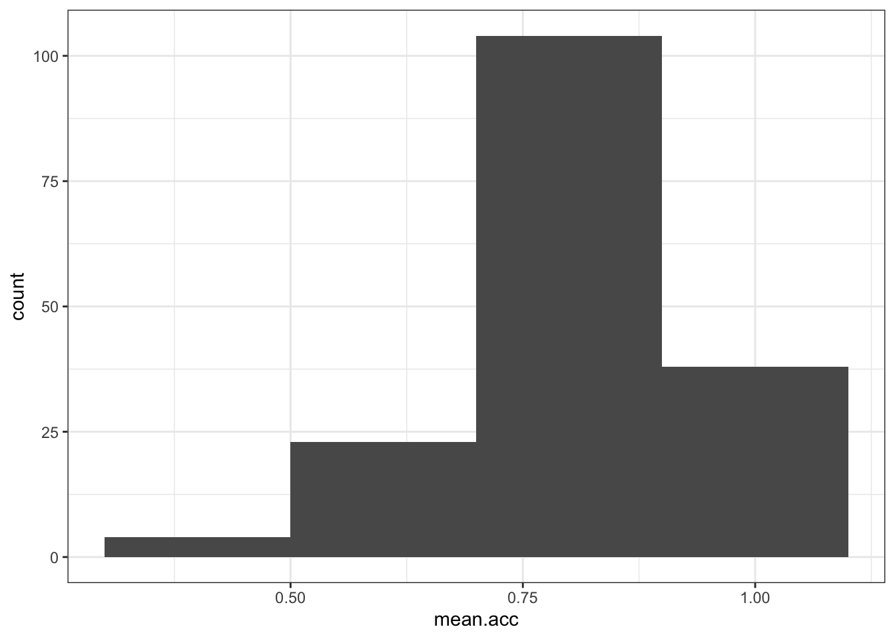
- The appearance of the labels using
labs()
ggplot(data = study.one, aes(x = mean.acc)) +
geom_histogram(binwidth = 0.2) +
theme_bw() +
labs(x = "mean accuracy", y = "frequency count")Notice how each line – except the last one – ends in a +
- What we are doing is telling R we want this + this + this …
- Each line then adds an extra step.
Introduce: learn to handle errors and warnings
You can break this code by not adding a + at the end of each bit (except the last line) Try it.
ggplot(data = study.one, aes(x = mean.acc))
geom_histogram(binwidth = 0.2) +
theme_bw() +
labs(x = "mean accuracy", y = "frequency")- Q.7. You will get an error message in the console window, orange and grey, if you omit a
+like in the example: what is the error message? - A.7. The message will read:
Error: Cannot add ggproto objects together. Did you forget to add this object to a ggplot object?
Run `rlang::last_error()` to see where the error occurred. - Q.8. Copy and then paste the error message into Google: click on one of the results: do you see any useful information?
- A.8. An explanation of the problem is shown e.g.
https://community.rstudio.com/t/could-anybody-help-me-cannot-add-ggproto-objects-together/11271
R will give you hints – often in red – in error messages if something has gone wrong. This can be a bit frightening but usually you can fix a problem by:
- Using trial and error: try changing things to see what happens;
- Copying the error message into an online search: usually, that will get you to a blog or discussion that is helpful.
The R community has many millions of people in it. The huge value of the community means that for every problem you encounter, someone else has already met that problem, solved it, and posted a blog online about how to fix it
Step 5: Now draw scatterplots to examine associations between variables
Revision: make sure you are confident about doing these things
You have seen these code moves before, in previous classes: we are strengthening skills by practising coding in different contexts
Task 9 – Create a scatterplot to examine the association between some variables
hint: Task 9 – We are working with geom_point() and you need x and y aesthetic mappings
ggplot(data = study.one, aes(x = mean.self, y = mean.acc)) +
geom_point()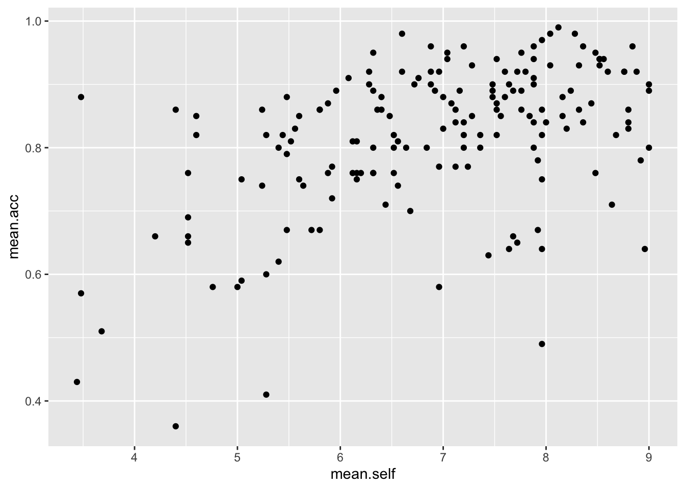
- This plot shows the possible association between x-axis variable
mean.selfand y-axis variablemean.acc
The plot code moves through the following steps:
ggplot(...)make a plotggplot(data = study.one, ...)with thestudy.onedatasetggplot(...aes(x = mean.self, y = mean.acc))using two aesthetic mappings
x = mean.selfmapmean.selfvalues to x-axis (horizontal, left to right) positionsy = mean.acc- mapmean.accvalues to y-axis (vertical, bottom to top) positions
geom_point()show the mappings as points.
Task 10 – Now do scatterplots with any pair of numeric variables you like
hint: Task 10 – Remember what we saw with summary(): not every variable consists of numbers
ggplot(data = study.one, aes(y = mean.self, x = mean.acc)) +
geom_point() 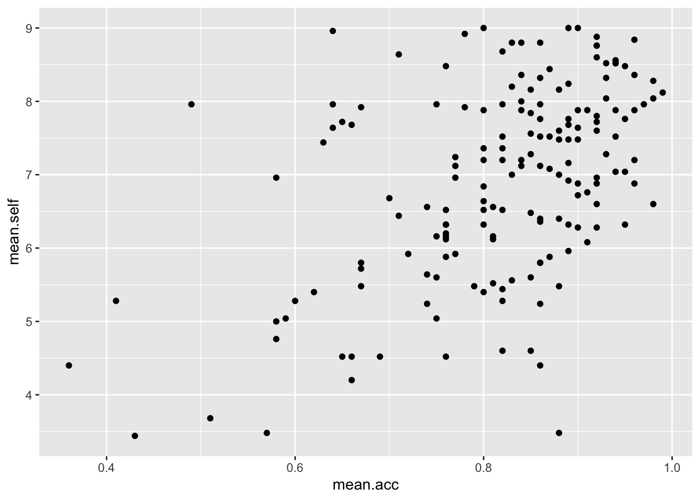
ggplot(data = study.one, aes(x = AGE, y = mean.self)) +
geom_point() 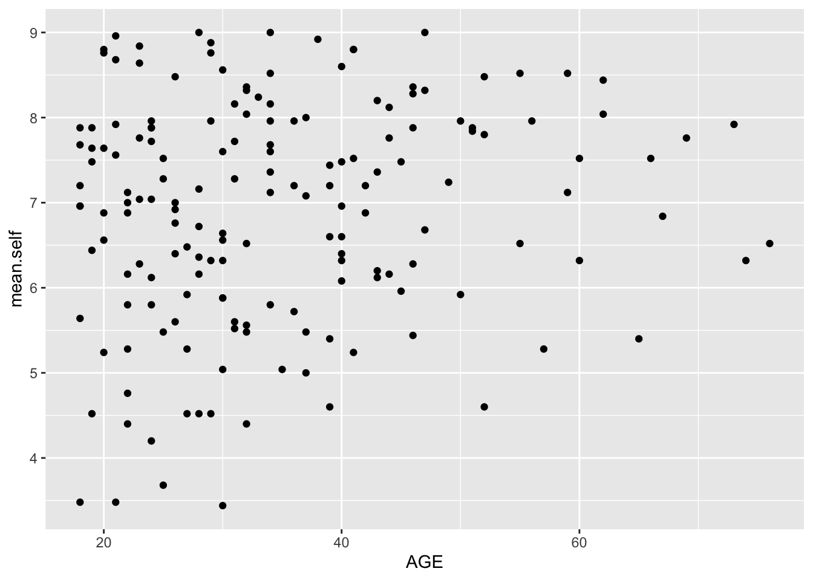
ggplot(data = study.one, aes(x = SHIPLEY, y = mean.self)) +
geom_point() 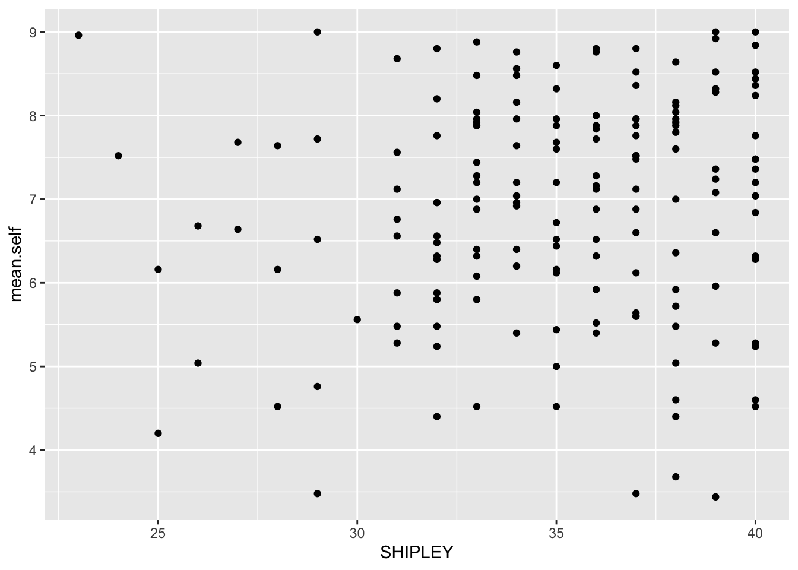
ggplot(data = study.one, aes(x = HLVA, y = mean.self)) +
geom_point() 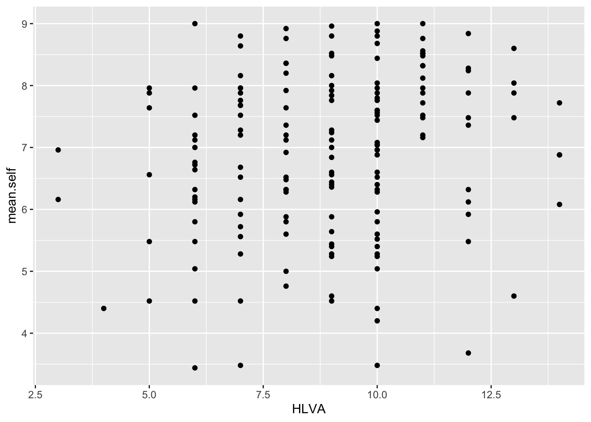
Extend: make some new moves
Task 11 – Edit the appearance of the plot step-by-step
Hint: Task 11 – We are going to edit:
The appearance of the points using alpha and size;
The colour of the background using
theme_bw();The appearance of the labels using
labs().The appearance of the points using alpha and size
ggplot(data = study.one, aes(x = HLVA, y = mean.self)) +
geom_point(alpha = 0.5, size = 2) 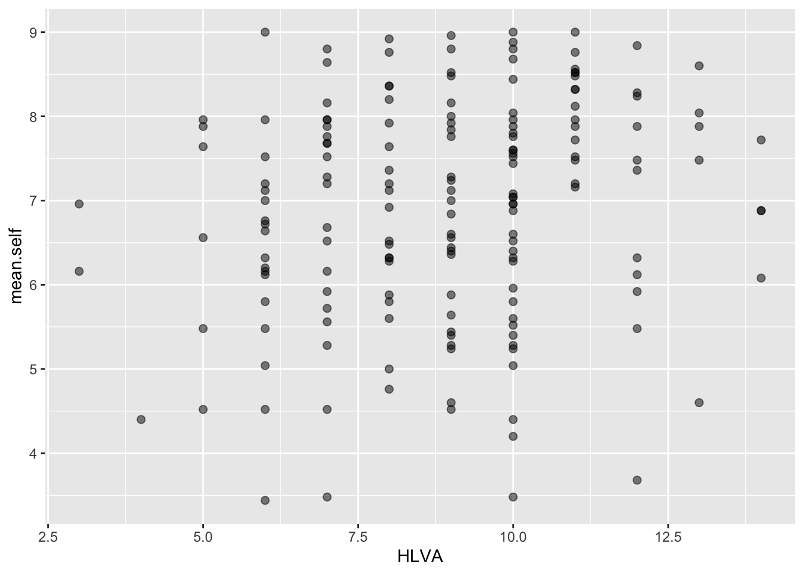
- The colour of the background using
theme_bw()
ggplot(data = study.one, aes(x = HLVA, y = mean.self)) +
geom_point(alpha = 0.5, size = 2) +
theme_bw()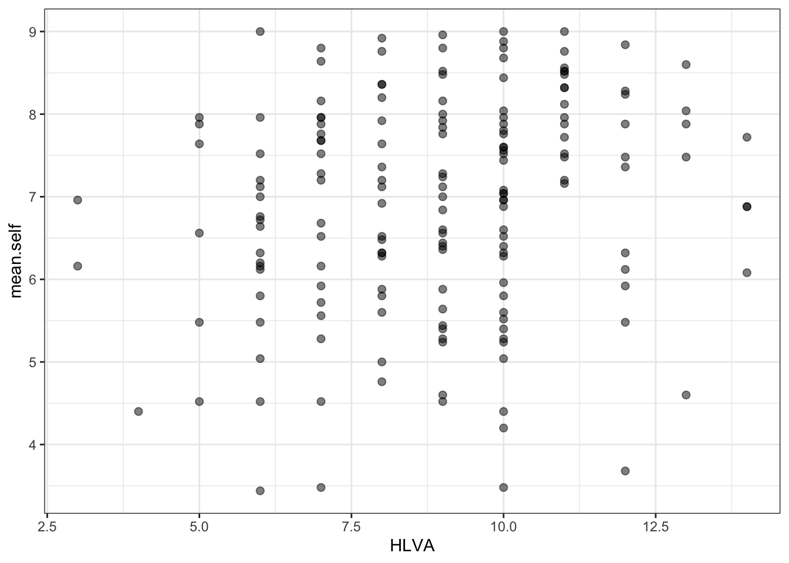
- The appearance of the labels using
labs()
ggplot(data = study.one, aes(x = HLVA, y = mean.self)) +
geom_point(alpha = 0.5, size = 2) +
theme_bw() +
labs(x = "HLVA", y = "mean self rated accuracy")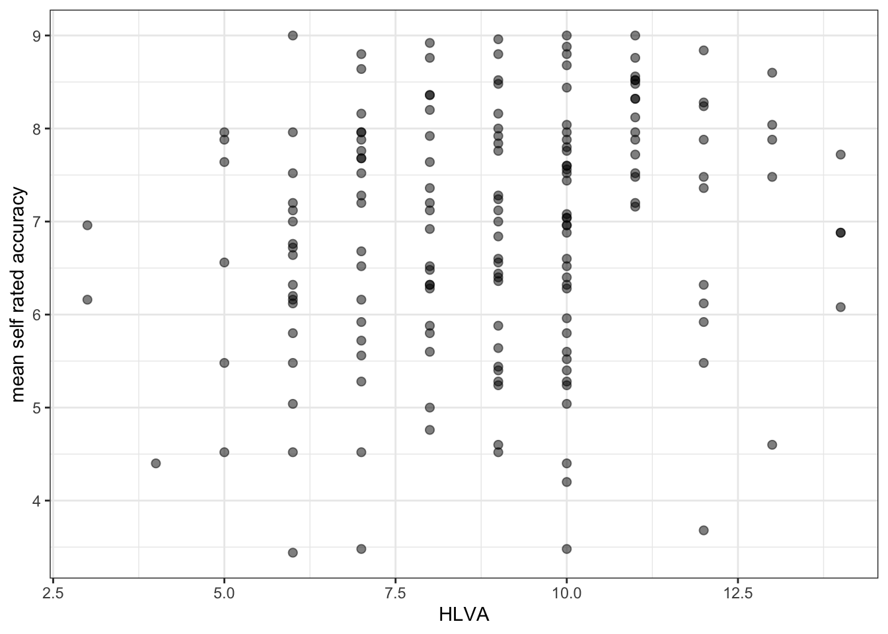
The arguments alpha and size can change the appearance of most geometric objects (geoms) in ggplot:
- In the code example, here, we vary the alpha number to change how opaque or transparent the points are
- And we vary the size number to vary the size of the points.
Task 12 – Now you experiment: edit the appearance of the plot by changing alpha and size – what about colour?
hint: Task 12 – Check out the ggplot reference for scatterplots
Q.9. – Can you find the ggplot reference page?
hint: Q.9 – Do a search with the keywords “ggplot reference geom_point”
A.9. – It is here:
https://ggplot2.tidyverse.org/reference/geom_point.html
- Q.10. – Can you change the colour of the points to a colour you like?
- hint: Q.10. – Useful information on colour can be found here:
https://r-graphics.org/recipe-colors-setting
See also:
http://www.cookbook-r.com/Graphs/Colors_(ggplot2)/
- A.10. – Here is how you do it:
ggplot(data = study.one, aes(x = HLVA, y = mean.self)) +
geom_point(alpha = 0.5, size = 2, colour = "hotpink") +
theme_bw() +
labs(x = "HLVA", y = "mean self rated accuracy")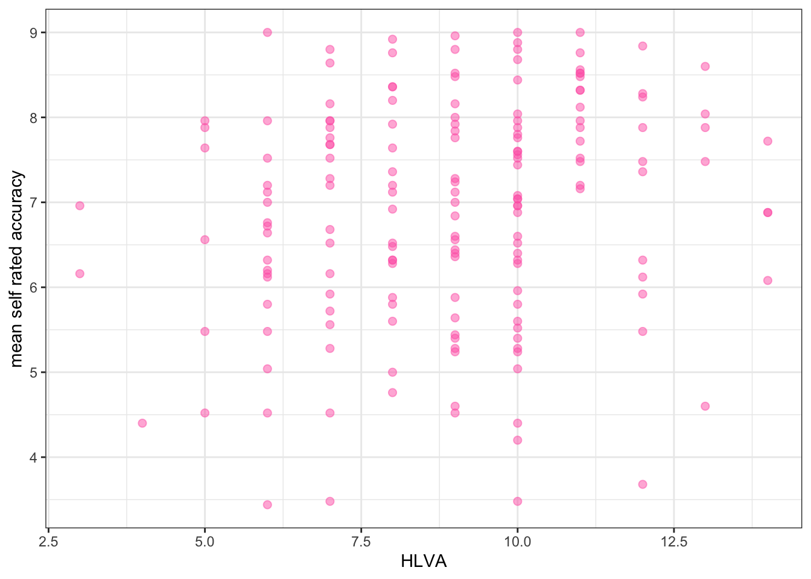
Now you: experiment!
Step 6: Use correlation to to answer the research questions
- revision: make sure you are confident about doing these things
One of our research questions is:
- Can people accurately evaluate whether they correctly understand written health information?
We can answer this question by examining whether mean self-rated accuracy of understanding correlates with mean accuracy of understanding. The logic is that if we can accurately rate our own understanding (from bad to good) then that rating should be associated – should be correlated with how accurately we can actually respond to questions that test that understanding.
Task 13 – Examine the correlation between mean self-rated accuracy (mean.self) and mean accuracy (mean.acc)
hint: Task 13 – We use cor.test()
cor.test(study.one$mean.acc, study.one$mean.self, method = "pearson", alternative = "two.sided")
Pearson's product-moment correlation
data: study.one$mean.acc and study.one$mean.self
t = 7.1936, df = 167, p-value = 2.026e-11
alternative hypothesis: true correlation is not equal to 0
95 percent confidence interval:
0.3619961 0.5937425
sample estimates:
cor
0.4863771 Q.11. – What is r, the correlation coefficient?
A.11. – r = 0.4863771
Q.12. – Is the correlation significant?
A.12. – r is significant
Q.13. – What are the values for t and p for the significance test for the correlation?
A.13. – t = 7.1936, p = 2.026e-11
Q.14. – What do you conclude, given the correlation results?
hint: Q.6 – Review the scatterplot you drew earlier to examine the shape of the association between these variables
A.14. – mean.acc and mean.self are positively correlated suggesting that as mean.acc scores increase so also do mean.self scores